Зайдите в телеграм бота, найдите сообщение с файлом ключа и нажмите на три точки, чтобы открыть меню
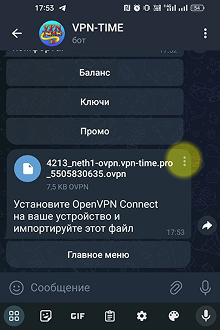
В открывшемся меню нажмите
Сохранить в загрузки
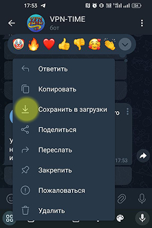
Установите и запустите OpenVPN Connect.
При первом запуске у вас спросят разрешение на показ уведомления (тут лучше согласиться: рекламы не будет, честно-честно).
Также попросят согласиться с условиями использования (увы, тут выбора нет).
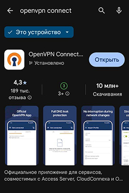
Как попадёте в главное окно, нажмите Upload File, а затем BROWSE.OpenVPN Connect.
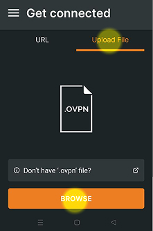
В следующем окне нажмите кнопку меню (квадратик с тремя полосками в верхнем левом углу)
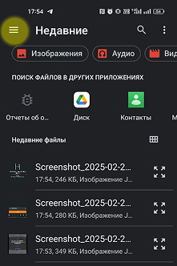
Выберите пункт с загрузками
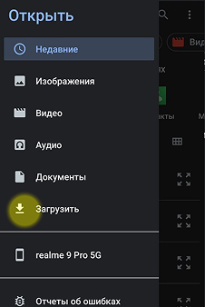
Нажмите на папку Telegram
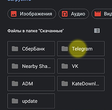
В открывшейся папке найдите скачанный файл с ключом
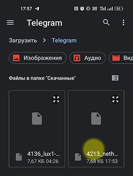
Для удобства напишите свой Profile Name или оставьте как есть.
Затем нажмите CONNECT.
Во всплывающем окне поставьте галочку Больше не спрашивать, а затем Разрешить.
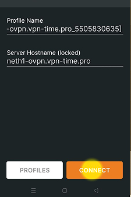
Чтобы включать/выключать VPN, двигайте этот ползунок.
Если всплывет окно, нажмите Don't show again, а затем CONFIRM.
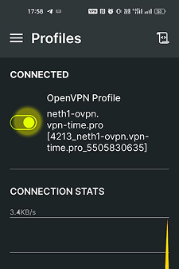
Настройка энергосбережения
Это позволит экономить не только заряд, но и ваш баланс и нашу пропускную способность.
ПРЕДУПРЕЖДЕНИЕ: С этой настройкой при частом включении/выключении экрана может происходить задержка при переподключении к VPN от нескольких секунд до 1 минуты.
Нажмите кнопку меню
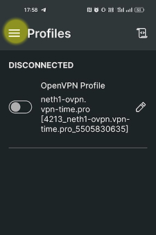
Перейдите во вкладку Settings
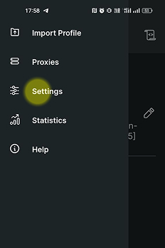
Поставьте галочку напротив пункта Battery Saver
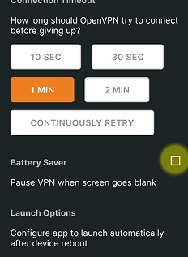